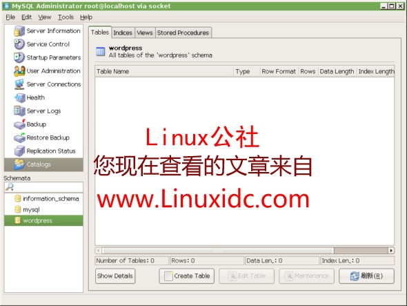
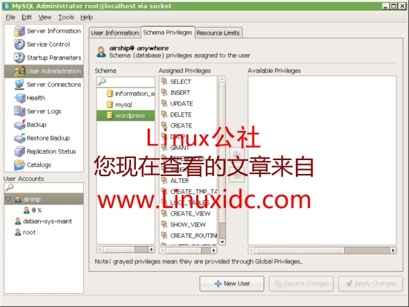
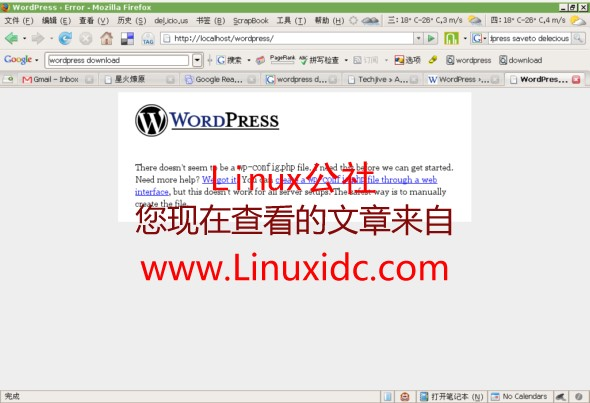

wordpress是站长比较喜欢的PHP博客系统，下面Linux公社为大家整理了一篇关于在Ubuntu下安装Wordpress系统的傻瓜教程，给需要的做个参考。
1 环境配置
1.1 安装必要软件
1.2 mysql初始配置
1.3 启动apache2和mysql server
2 Wordpress安装
|
|
2.1 准备工作
2.2 wordpress配置
1 环境配置
1.1 安装必要软件
打开终端
sudo apt-get install apache2
sudo apt-get install libapache2-mod-php5 php5
sudo apt-get install mysql-server-5.0 mysql-common mysql-admin
sudo apt-get install php5-mysql
1.2 mysql初始配置
设置mysql密码：
sudo mysql-admin
第一次运行用root登录不需要密码。可以进去后添加用户同时修改root密码。
然后点击Catalogs，在下面的Schemata里面新建一个数据库。
然后进入User Administrator，在新建的User上选Schema Privileges，赋予其对该数据库操作的权限。


1.3 启动apache2和mysql server
启动apache2和mysql
sudo /etc/init.d/mysql start;sudo /etc/init.d/apache2 start
2 Wordpress安装
2.1 准备工作
下载，解压缩，放到apache2的目录里，修改权限。
wget -c http://wordpress.org/latest.tar.gz
tar xvzf wordpress-2.2.tar.gz
sudo cp -rf wordpress /var/www/
sudo chown -R www-data:www-data wordpress/
2.2 wordpress配置
然后进入http://localhost/wordpress/
check一下，如下图：

修改wp-config-sample.php文件
sudo gvim wp-config-sample.php
主要是前面三个
define('DB_NAME', 'wordpress'); // The name of the database
define('DB_USER', 'username'); // Your MySQL username
define('DB_PASSWORD', 'password'); // ...and password
修改成刚才建立的数据库名称，用户名和密码。 然后运行
sudo mv wp-config-sample.php wp-config.php
现在进入入http://localhost/wordpress/
check一下，如下图：